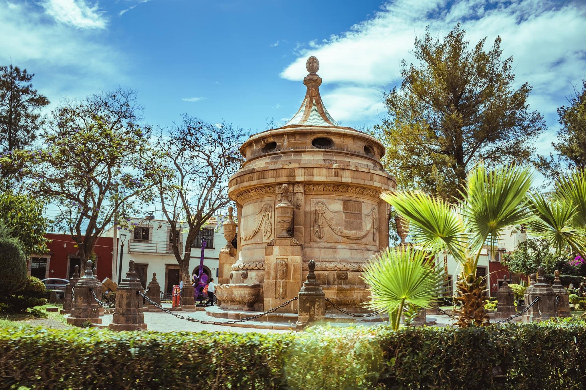
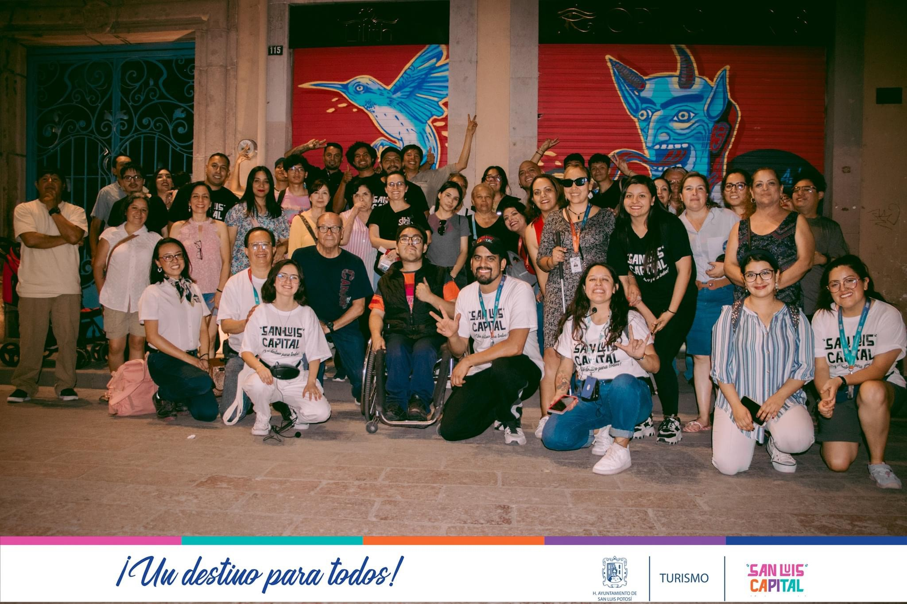
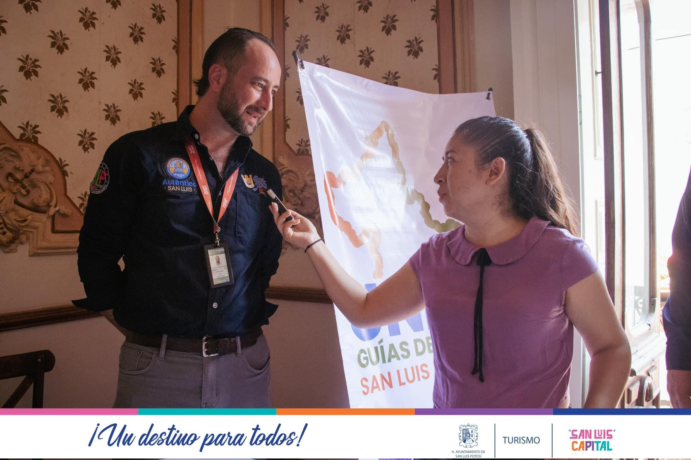
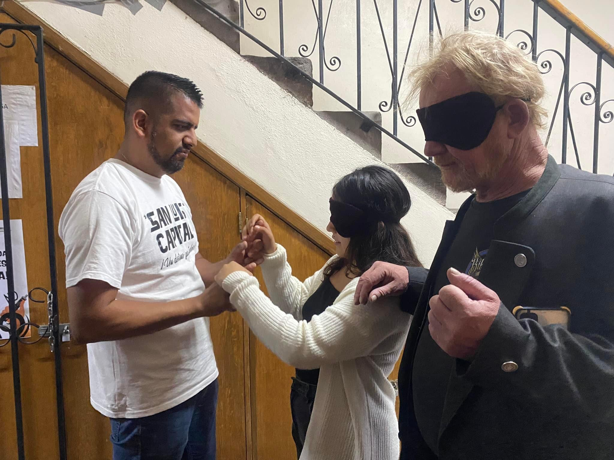
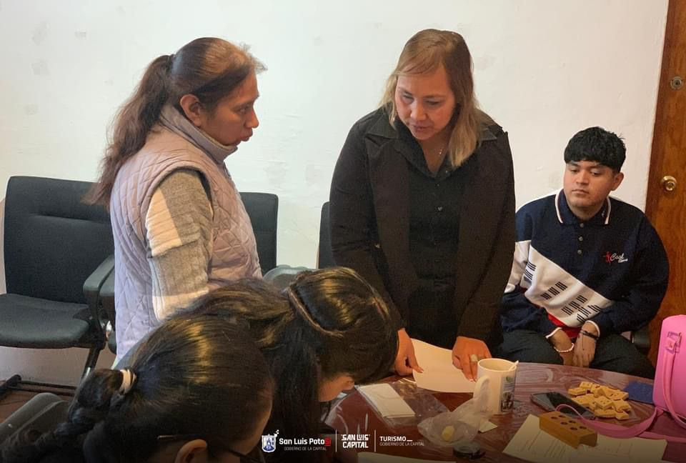

TURISMO SOCIAL

El Turismo Social se concibe como un derecho universal, mediante el cual se garantiza el acceso al descanso, recreación, ocio, tiempo libre, por parte de segmentos de población en vulnerabilidad social y económica, en condiciones adecuadas de economía, accesibilidad, seguridad, comodidad y calidad. Fuente ICT
En la Dirección de Turismo Municipal trabajamos para garantizar el turismo como derecho para todas las personas (personas con discapacidad, personas adultas mayores, niñas y niños, y cualquier persona en situación de vulnerabilidad). Por un turismo Social, Solidario y Sostenible.
TURISMO PARA TODOS Y TODAS
Un programa dirigido a personas en situación de vulnerabilidad en el que la cuenta cuentos, Martha Soriano (promotora cultural/narradora oral escénica), lleva distintas historias a asilos, escuelas de nivel básico, al Centro de Reinserción Social (CERESO), etc.
Este programa es gratuito y abierto al público en general.

REVISIONES DE ACCESIBILIDAD
Las revisiones de accesibilidad son ejercicios de comparativa con estándares internacionales en materia de accesibilidad para conocer el estado de instalaciones, atención y capacitación con el objetivo de garantizar el acceso a personas con discapacidad en igualdad de condiciones.

SENTIR PARA VER
¿Te imaginas conocer los lugares más icónicos del Centro Histórico con los ojos vendados?
Como parte del área de Turismo Inclusivo, la Dirección de Turismo Municipal realiza un recorrido por algunos sitios de interés en el Centro Histórico de la capital potosina, este es realizado por personas con discapacidad visual, quienes invitan a las personas a escuchar y sentir la arquitectura, esculturas y los sonidos de la ciudad.

GUÍA EN BRAILLE
¿Te imaginas conocer los lugares más icónicos del Centro Histórico con los ojos vendados?
Disponible de forma gratuita, la guía en braille pone al alcance de las personas con discapacidad visual la información sobre algunos de los lugares más representativos de la capital. Este trabajo realizado en conjunto con el DIF Municipal es un ejemplo del trabajo que realizamos para garantizar el turismo como derecho.
